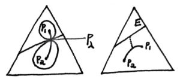
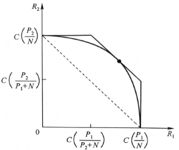

1 Entropy #
1.1 #
entropy $H(X) = - \sum\limits_{x\in \mathcal{X}} p(x)logp(x) = -Elogp(X)$
joint entropy, conditional entropy $H(X,Y)=H(X)+H(Y|X)$
note: usually $H(X|Y) \neq H(X|Y=y)$
relative entropy(KL distance) $D(p\|q)=- \sum\limits_{x\in \mathcal{X}} p(x)log\frac{p(x)}{q(x)} = -Elog\frac{p(X)}{q(X)}$
note: usually $D(p\|q) \neq D(q\|p)$
mutual inforamtion $I(X;Y)=D(p(x,y)\|p(x)p(y))$
$I(X;Y)=H(X)+H(Y)-H(X,Y)=H(X)-H(X|Y),\ I(X;X)=H(X)$
Venn diagram
chain rule $H(X_1,\cdots,X_n)=\sum\limits_{i=1}^nH(X_i|X_{i-1},\cdots,X_1),\ I(X_1,\cdots,X_n;Y)=\sum\limits_{i=1}^nI(X_i;Y|X_{i-1},\cdots,X_1)$
Jesen Ineq: $\text{convex func. }f\text{ and a RV }X,\ Ef(X)\geq f(EX)$
Info. Ineq: $D(p\|q)\geq 0,\text{ eq. iff }p=q$ $I(X;Y)\geq 0, \text{ eq. iff }X\ id.\ Y$
$H(X)\leq log|\mathcal{X}|$ $H(X_1,\cdots,X_n)\leq \sum\limits_{i=1}^nH(X_i)$
log-sum Ineq: $\sum_{i=1}^n a_i \log \frac{a_i}{b_i} \geq\left(\sum_{i=1}^n a_i\right) \log \frac{\sum_{i=1}^n a_i}{\sum_{i=1}^n b_i}$ $D(p\|q)$ is convex about $(p,q)$ and $H(p)$ is concave about $p$.
Markov chain $X\rightarrow Y\rightarrow Z,\ I(X;Z|Y)=0$
Data Processing Ineq: $I(X;Y)\geq I(X;Z),\text{ eq. iff }I(X;Y|Z)=0$
$\theta \rightarrow X \rightarrow T(X)$ sufficient statistics $I(\theta ;X)=I(\theta ;T(X))$ or $X\ id.\ \theta\text{ when }T(X)\text{ is given}$
minimal suf. stat. $\theta \rightarrow T(X) \rightarrow U(X) \rightarrow X$
Fano Ineq: $X\rightarrow Y \rightarrow \hat{X},\ P_e=Pr(X\neq \hat{X}),\ H_e = -P_elogP_e -(1-P_e)log(1-P_e),\\ H(X|Y)\leq H(X|\hat{X})\leq H_e + P_eH(X)\leq H_e + P_elog|\mathcal{X}|$
$X \sim p(x),\ Y \sim q(y),\ Pr(X=Y)\geq 2^{-H(p)-D(p\|q)}$
1.2 #
(weak)LLN, asymptotic equipartition property AEP: $X_1,\cdots,X_n \overset{iid.}{\sim}p(x),\ -\frac{1}{n}logp(X_1,\cdots,X_n) \overset{p}{\rightarrow} H(X)$
typical set $A^n_\epsilon \subset \mathcal{X}^n$ $\text{large }n,\ Pr(A^n_\epsilon) > 1-\epsilon,\ (1-\epsilon)2^{n(H(X)-\epsilon)} \leq |A^n_\epsilon| \leq 2^{n(H(X)+\epsilon)}$ (In short, $A^n_\epsilon$ has roughly $2^{nH}$ elements with equal prob. $2^{-nH}$.)
Nearly $nH$ bits can express sequence $X^n$.(typical set $n(H+\epsilon)+1$ bit and nontypical $nlog|\mathcal{X}|+1$ bit)
In the sense of first-order exponent, among all sets that have $Pr>1-\epsilon$，$A^n_\epsilon$ is the minimal.
stationary stochastic process, stationary Markov chain
entropy rate of a sto. $\{X_i\}$: $H(\mathcal{X}) = \lim\limits_{n\rightarrow \infty}\frac{1}{n}H(X_1,\cdots,X_n)$(if limit exists)
for stn. sto. $\text{also } = \lim\limits_{n\rightarrow \infty}H(X_n|X_{n-1},\cdots,X_1)$ proof: Stolz-Cesaro Means Thm.
for stn. MC of trans. mt $P$ and stn. dis. $\mu = P\mu$, $H(\mathcal{X}) = H(X_2|X_1) = -\sum\limits_{ij}\mu_iP_{ij}logP_{ij}$
Second law of thermodynamics: as time $n\uparrow$, $$ D(\mu_n\|\mu^\prime_n)\downarrow,\text{ esp. }D(\mu_n\|\mu);\\ \text{if stn. dis. is uni.(equal a priori prob. principle) } H(X_n)\uparrow;\\ \text{for stn. MC }H(X_n|X_1)\uparrow;\\ \text{operator(e.g. shuffling) }T\ id.\ X,\ H(TX)\geq H(X) $$
$\text{stn. MC }\{X_n\},\ Y_i = \phi(X_i),\ H(\mathcal{Y})=\lim\limits_{n\rightarrow \infty}H(Y_n|Y_{n-1},\cdots,Y_1)=\lim\limits_{n\rightarrow \infty}H(Y_n|Y_{n-1},\cdots,Y_1,X_1)$
Shannon-McMillan-Breiman(general AEP) Thm.: $H$ is the entropy rate of a finite ergodic sto. ${X_n}$, $-\frac{1}{n}logp(X_0,\cdots,X_{n-1}) \overset{a.s.}{\rightarrow} H$ proof: Sandwich Thm.
1.3 #
differential entropy $h(X)= -\int_Sf(x)logf(x)dx$ ($S$ is the support set of RV $X$)
joint diff. ent., conditional diff. ent., relative ent., MI, AEP are in the same way.
example: $h(\mathcal{N}(\mu,\Sigma))=\frac{n}{2}+\frac{1}{2}log(2\pi)^n|\Sigma|$; for bivar. $\mathcal{N}_2$, $I(X_1;X_2)=-\frac{1}{2}log(1-\rho^2)$
$h(aX)=h(X)+log|a|,\ h(AX)=h(X)+log|detA|$
Among all dis. with $\Sigma=EXX^\prime$, Gauss dis. has max ent. $h(X)\le \frac{1}{2}log(2\pi e)^n|\Sigma|$ proof: $D(f\|N)\geq 0,\ \int flogN = \int NlogN$
estimation error (if have side info. $Y$) $E(X-\hat{X})^2\geq \frac{1}{2\pi e}e^{2h(X|Y)}$
Similarly, $A^n_\epsilon = \{x\in S^n:-\frac{1}{n}logp(x)-h(X)|\leq \epsilon\}$. While in discrete case we use cardinal $|A^n_\epsilon| \overset{\cdot}{=} 2^{nH}$, in continuous case we use volume $V(A^n_\epsilon)\overset{\cdot}{=} 2^{nh}$ (like a cube with side length $2^h$).
relation with discrete ent: dis. $p(x)$ is Riemann integrable, $X$ is partitioned as $X^\Delta$ by intervals with length $\Delta$, then $\lim\limits_{\Delta \rightarrow 0} H(X^\Delta)+log\Delta = h(X)$. Thus a $n$ bit quantized cont. RV $X$ has a ent. of $h(X)+n$.
more: several ineq. about det can be derived thru ent. of a multivar ndis. e.g. Hadamard ineq: $\prod\limits_i \Sigma_{ii} \geq |\Sigma|\geq \prod\limits_i \sigma^2_i$ where $\sigma^2_i$ is the cond. variance of $X_i$ given other $X_j$, or $\sigma^2_n = \frac{|\Sigma_n|}{|\Sigma_{n-1}|}$
1.4 #
Maximun entropy dis./princ./estimation
$\max\limits_f h(f)\text{ s.t. }f(x)\geq 0,\ \int_Sf(x)dx = 1,\ \int_S f(x)r_i(x)dx = \alpha_i$
$f^*(x)=e^{\lambda_0+\sum\limits_i \lambda_i r_i(x)}=\frac{e^{\sum\limits_i\lambda r_i(x)}}{\int_S e^{\sum\limits_i\lambda r_i(x)}dx}$ proof: Lagrange; Info ineq.
example: Boltzmann dis. $S=[0,+\infty),\ EX=\mu,\ f(x)=\frac{1}{\mu}e^{-\frac{x}{\mu}}$
$S=(-\infty,+\infty),\ EX=\alpha_1,\ EX^2=\alpha_2,\ f(x)=\mathcal{N}(\alpha_1,\alpha_2-\alpha_1^2)$ but when we have third moment constraint, $\lambda_3$ needs to be $0$ to aviod $\int^{+\infty}_{-\infty}f=\infty$, and therefore this method may be out of work. However we can add some carefully devised perturbation onto the original $\mathcal{N}$ to get whatever $\alpha_3$ while holding $\alpha_1$ and $\alpha_2$. Thus $\sup h(f)=h(\mathcal{N}(\alpha_1,\alpha_2-\alpha_1^2))=\frac{1}{2}\ln2\pi e(\alpha_2-\alpha_1^2)$, the max ent. is only $\epsilon$-reachable.
diff. ent. rate $h(\mathcal{X})=\lim\limits_{n\rightarrow \infty}\frac{1}{n}h(X_1,\cdots,X_n) \overset{stn.}{=} \lim\limits_{n\rightarrow \infty} h(X_n|X^{n-1})$
for Gauss stno. $h(\mathcal{X})=\frac{1}{2}log2\pi e+\frac{1}{4\pi}\int^\pi_{-\pi}logS(\lambda)d\lambda$, $\sigma^2_\infty = \frac{1}{2\pi e}2^{2h}$(best em. error given inf. history)
AR model, autocorrelation func. $R(k)=EX_iX_{i+k}$ power spectral density PSD $S(\lambda) = \mathcal{F}(R(k))$
Burg Thm.: $$ p\text{ order Gaussian-Markov autoreg. sto.}\\ X_i=\sum_{j=1}^p a_j X_{i-j}+Z_i,\ Z_i\overset{iid.}{\sim}\mathcal{N}(0,\sigma^2)\\ \text{attains the max ent. rate among all sto. satisfying the conditions}\\ E X_i X_{i+k}=\alpha_k, 1 \leq k \leq p,\forall i $$
$a_i,\sigma^2$ can be solved from Yule-Walker equations: $R(m)=\sum\limits_{k=1}^p a_k R(m-k)+\sigma^2 \delta_{m, 0},1 \leq m \leq p$
2 Coding, Statistics and Investment #
2.1 #
source coding $C: \mathcal{X}\rightarrow \mathcal{D}^*,\ l(x)=|C(x)|,\ L(C)=El(X)$ (alphabet $\mathcal{D}=\{1,\dots,D-1\}$)
nonsigular $\supset$ uniquely decodable $\supset$ instantaneous/prefix
Kraft ineq: for inst. code on D, codeword length $l_1,\dots$, $\sum\limits_i D^{-l_i}\leq 1$ proof: all codewords’ son sets disjoint.
optimal code $H_D(X)\le L< H_D(X)+1,\text{ eq. iff. }D^{-l_i}=p_i$ D-adic dis. proof: Shannon coding by Lagrange
Shannon coding: $l_i=\lceil log_D \frac{1}{p_i}\rceil$ (to prove the upper bound)
for stno. $\{X_n\}$, $L\rightarrow H(\mathcal{X})$
Shannon First Thm. (Noiseless Coding Thm.): $H(\mathcal{X})\le L\le H(\mathcal{X})+\frac{1}{n}$
for wrong code(using $q(x)$), the length will increase by $D(p\|q)$
note: actually all uni. decodable codes satisfy Kraft ineq.(McMillian ineq.) so they are no better than prefix codes.
Huffman coding $C_{H}$ is optimal.
Shannon-Fano-Elias coding length $\lceil log_D \frac{1}{p_i}\rceil+1$(Elias) with codewords assigned by binary expansion of each symbol’s prob. midpoint (not Fano’s sorting).
Shannon coding is competitive optimal $Pr(l(X)\ge l^\prime(X)+c)\le \frac{1}{2^{c-1}}$
(refer to 5.5 for Kolmogorov complexity)
2.2
prob. simplex $\mathcal{P}$ type $P_x$ on $\mathcal{X}$, type class $T(P)=\{x\in \mathcal{X}^n:P_x=P\},\ P\in \mathcal{P}^n$
$1.\ |\mathcal{P}^n|\le (n+1)^{|\mathcal{X}^|}\\ 2.\ Q^n(x)=2^{-n(D(P_x\|Q)+H(P_x))}\\ 3.\ |T(P)|\overset{\cdot}{=} 2^{nH(P)}\\ 4.\ Q^n(T(P))\overset{\cdot}{=} 2^{-nD(P\|Q)}$
($x=\{x_1,\dots,x_n\},\ X_i \overset{iid.}{\sim}Q(x)$)
seq. typical set $T_\epsilon^{Q^n}=\{x:D(P_x\|Q)\le \epsilon\},\ Pr(T_\epsilon^{Q^n})\rightarrow 1,\ D(P_x\|Q)\overset{a.s.}{\rightarrow}0$
Large deviation theory, Sanov Thm.: $$ \text{subset }E\subset \mathcal{P},\ Q^n(E)\le (n+1)^{|\mathcal{X}|}2^{-nD^*},\ D^*=\min\limits_{P\in E}D(P\|Q);\\ \text{if }E\text{ is the closure of its interior, }-\frac{1}{n}logQ^n(E) \rightarrow D^* $$
if constraints $E=\{P:\sum\limits_xP(x)g_i(x)\ge \alpha_i\}$, we can get $P^*(x)=\frac{Q(x)e^{\sum\limits_i\lambda g_i(x)}}{\sum\limits_{x\in \mathcal{X}}Q(x)e^{\sum\limits_i\lambda g_i(x)}}$ using Lagrange.
jointly typical set $A^n_\epsilon = \{(x^n,y^n)\in \mathcal{X}^n\times \mathcal{Y}^n: \left|-\frac{1}{n} \log p\left(x^n\right)-H(X)\right|<\epsilon,\ \left|-\frac{1}{n} \log p\left(y^n\right)-H(Y)\right|<\epsilon,\\ \left|-\frac{1}{n} \log p\left(x^n, y^n\right)-H(X, Y)\right|<\epsilon\},\ Pr(A^n_\epsilon)\rightarrow 1$
$(\tilde{X}^n,\tilde{Y}^n)\sim p(x^n)p(y^n),\ Pr((\tilde{X}^n,\tilde{Y}^n)\in A^n_\epsilon)\rightarrow2^{-nI(X;Y)}$ proof: Sanov Thm.
$\text{closed convex set }E \subset \mathcal{P},\ Q\notin E,\ P^* = \arg\min\limits_{P\in E}D(P\|Q),\ \forall P\in E,\ D(P\|Q)\ge D(P\|P^*)+D(P^*\|Q)$
Conditional Limit Thm.: $\text{seq. }X^n\overset{iid.}{\sim}Q,\ n\rightarrow \infty,\ Pr(X_i=x|P_{X^n}\in E)\overset{p}{\rightarrow}P^*(x)$ (i.e. type $P^*$ represents the whole set) proof: $D(P_1\|P_2)\ge \frac{1}{2\ln2}\|P_1-P_2\|^2_1$, D’s convergence implies $\mathcal{L_1}$ norm’s convergence. (Taylor: $D(P_1\|P_2)= \frac{1}{2}\chi^2_{P_1,P_2}+\ldots$)
Hypo test $X_i \overset{iid.}{\sim}Q(x),\ H_1:Q=P_1,\ H_2:Q=P_2$, Neyman-Pearson Lem.: likelihood ratio $T\ge 0$, acceptance region $A_n(T)=\{x^n:\frac{P_1(x^n)}{P_2(x^n)}>T\},\ \alpha^*=P^n_1(A^c_n(T)),\ \beta^*=P^n_2(A_n(T)),\\ \text{ other regions with }\alpha\le \alpha^*\text{ must have }\beta\ge \beta^*$
$\frac{P_1(X^n)}{P_2(X^n)}>T$ equals to $D(P_{X^n}\|P_2)-D(P_{X^n}\|P_1)>\frac{1}{n}logT$, under this constraint we minimize $D(P\|P_2)$(also $D(P\|P_1)$) using Lagrange and get $P_\lambda = \frac{P^\lambda_1(x)P^{1-\lambda}_2(x)}{\sum\limits_{x\in \mathcal{X}} P^\lambda_1(x)P^{1-\lambda}_2(x)}$ to estimate $\alpha_n \overset{\cdot}{=}2^{-nD(P_\lambda\|P_1)}$, $\beta_n \overset{\cdot}{=}2^{-nD(P_\lambda\|P_2)}$. ($\lambda$ can be determined by $D(P_{X^n}\|P_2)-D(P_{X^n\|P_1})=\frac{1}{n}logT$.)

relative ent. AEP: $X_1,\cdots,X_n \overset{iid.}{\sim}P_1(x),\ \forall P_2(x),\ -\frac{1}{n}log\frac{P_1(X_1,\cdots,X_n)}{P_2(X_1,\cdots,X_n)} \overset{p}{\rightarrow} D(P_1\|P_2)$
relative ent. typical set $P_1(A^n_\epsilon(P_1\|P_2))>1-\epsilon,\ P_2(A^n_\epsilon(P_1\|P_2))\rightarrow 2^{-nD(P_1\|P_2)}$
Chernoff-Stein Lem.: $\alpha_n=P^n_1(A^c_n),\ \beta_n=P^n_2(A_n),\ \beta^\epsilon_n =\min\limits_{A_n\subset \mathcal{X},\alpha_n<\epsilon}\beta_n,\ \lim\limits_{n\rightarrow \infty}\frac{1}{n}log\beta^\epsilon_n=-D(P_1\|P_2)$
when Bayesian weighted $D^*=\min\limits_{A_n} \lim\limits_{n\rightarrow \infty}-\frac{1}{n}log(\pi_1\alpha_n+\pi_2\beta_n)$, Chernoff Info. $C(P_1,P_2)=D^*=D(P_\lambda\|P_1)=D(P_\lambda\|P_2)$ or $C(P_1,P_2)=-\min\limits_{0\le\lambda\le 1} log(\sum\limits_xP^\lambda_1(x)P^{1-\lambda}_2(x))$
(note: $D^*$ is not related to $\pi_1,\pi_2$ since large sample will eliminate a priori knowledge $\frac{\pi_1}{\pi_2}\frac{P_1(X_n)}{P_2(X_n)}\overset{?}{\sim}T$)
Score func. $V=\frac{\partial}{\partial\theta}\ln f(X;\theta),\ EV=0$
Fisher Info. $J(\theta)=EV^2=-E\frac{\partial^2}{\partial\theta^2}\ln f(X;\theta)$ $J_n(\theta)=nJ(\theta)$
Cramer-Rao Ineq: $\text{unbiased stat. }T(X)\text{ of }\theta,\ \Sigma(T)\ge J^{-1}(\theta)$ (for multivar. it means mt $\Sigma-J^{-1}$ is semipositive.) (Similarly, for biased stat. we have $b_T(\theta)=ET-\theta,\ E(T-\theta)^2\ge \frac{(1+b^\prime_T(\theta))^2}{J(\theta)}+b^2_T(\theta)$.)
proof: Cauchy-Schwarz Ineq. for $V-EV$ and $T-ET$.
some senses:
for para. dis. family $\{p_\theta(x)\}$, $\theta\rightarrow \theta^\prime,\ D(p_\theta\|p_\theta^\prime)\sim \frac{J(\theta)}{2}$;
de Brujin Ineq $Z\ id.\ X,\ Z\sim \mathcal{N}(0,1),\ \frac{\partial}{\partial t}h(X+\sqrt{t}Z)=\frac{1}{2}J(X+\sqrt{t}Z),\text{ if limit exists, }\frac{\partial}{\partial t}h(X+\sqrt{t}Z)\big|_{t=0}=\frac{1}{2}J(X)$ ($h$’s base is $e$);
Just like ent. power $2^{nH(X)}$ can be seemed as the volume of typical set, Fisher info. $J(X)$ can be seemed as the surface area, where $J(X)=\int \frac{(\frac{\partial f}{\partial x})^2}{f}dx$;
Fisher info’s convolution ineq $\frac{1}{J(X+Y)}\ge \frac{1}{J(X)}+\frac{1}{J(Y)}$
ent. power Ineq: $X\ id.\ Y,\ \dim X=\dim Y=n,\ 2^{\frac{2}{n}h(X+Y)}\ge 2^{\frac{2}{n}h(X)}+2^{\frac{2}{n}h(Y)}$ or $h(X+Y)\ge h(X^\prime+Y^\prime)$, where $X^\prime,Y^\prime\sim \mathcal{N},\ X^\prime\ id.\ Y^\prime,\ h(X^\prime)=h(X),\ h(Y^\prime)=h(Y)$
2.3
Kelly game $b^*=p$
Gambling conservation Thm.: $W^*+H=logm$ (for uniform fair oppo. game)
estimation of entropy of English (Shannon letter guessing game)
potfolio $\mathcal{B}=\{b\in \mathcal{R}^m:b_i\ge 0, \sum\limits_{i=1}^m b_i =1\}$ $X\sim F(x),\ S=b^\prime X$
first and second moment method: Sharpe-Markowitz theory, CAPM
growth rate $W(b,F)=\int logS dF = Elogb^\prime X$ $S_n = \prod\limits_{i=1}^n S_i,\ \frac{1}{n}logS_n \overset{a.s.}{\rightarrow}W,\ S_n\overset{\cdot}{=} 2^{nW}$
log optimal porfolio $W^*(F)=\max\limits_b W(b,F)$
$W(b,F)$ is concave about $b$, linear about $F$, and $W^*(F)$ is convex about $F$.
$b^*$’s KT condition: $E(\frac{b^\prime X}{{b^{*}}^\prime X})\le 1,\ E(\frac{X_i}{{b^*}^\prime X})=1\text{ if }b^*_i>0,\le 1\text{ if }b^*_i=0$
causal portfolio $b_i:\mathcal{R}_+^{m(i-1)}\rightarrow \mathcal{B}$ log optimal is the best. $ElogS^*_n = nW^*\ge ElogS_n$
Side info. raises growth rate. $\Delta W=\int_y f(y) \Delta W_{Y=y}\le I(X;Y)$
$W^*_{\infty}=\lim\limits_{n\rightarrow \infty}\frac{1}{n}W^*(X_1,\cdots,X_n) \overset{stn.}{=} \lim\limits_{n\rightarrow \infty} W^*(X_n|X^{n-1})$
$\frac{S_n}{S^*_n}\text{ is a supermartingale, }\overset{a.s.}{\rightarrow}V,\ EV\le 1,\ Pr(\sup\limits_n\frac{S_n}{S^*_n}\ge t)\le \frac{1}{t}$
universal portfolio: $S^*_n(x^n)=\max\limits_b \prod\limits_{i=1}^nb^\prime x_i,\ \hat{S_n}(x^n)=\prod\limits_{i=1}^n\hat{b}^\prime _i(x^{i-1})x_i,\ \max\limits_{\hat{b}}\min\limits_{x^n}\frac{S_n(x^n)}{S^*_n(x^n)}=V_n,\\ V_n=(\sum\limits_{n_1+\dots+n_m=n}\binom{n}{n_1,\dots,n_m}2^{-nH(\frac{n_1}{n},\dots,\frac{n_m}{n})})^{-1}\sim n^{-\frac{m-1}{2}}$
$\hat{b}_{n+1}(x^i)=\frac{\int_\mathcal{B}bS_i(b,x^i)d\mu(b)}{\int_\mathcal{B}S_i(b,x^i)d\mu(b)},\ \hat{S}_n(x^n)=\int_\mathcal{B}S_n(b,x^n)d\mu(b)$
3 Communication #
3.1
discrete channel $(\mathcal{X},p(y|x),\mathcal{Y})$
DMC, n-th extension $p(y_k|x^k,y^{k-1})=p(y_k|x_k)$, non-feedback $p(x_k|x^{k-1},y^{k-1})=p(x_k|x^{k-1})$, thus $p(y^n|x^n)=\prod\limits_i p(y_i|x_i)$
$(M,n)$ code of channel: message index set $W\in \mathcal{W}=\{1,\dots,M\}$, coding func. $X^n:\mathcal{W}\rightarrow \mathcal{X}^n$ and codebook $\mathcal{C}=\{x^n(1),\dots,x^n(M)\}$, decoding func. $g:\mathcal{Y}\rightarrow \mathcal{W}$
$W\rightarrow X^n(W) \rightarrow Y^n \rightarrow \hat{W}$
conditional, maximum, average prob. of error $\lambda_i = \sum\limits_{y^n}p(y^n|x^n(i))I(g(y^n)\neq i),\ \lambda=\max\limits_i \lambda_i,\ P^n_e=\bar{\lambda_i}$
rate $R=\frac{logM}{n}$ bit/trans.
achievable rate $n\rightarrow\infty,\ \lambda\rightarrow 0$
channel capacity $C=\max\limits_{p(x)}I(X;Y)$ $0\le C=\max\limits_{p(x)} H(Y)-H(Y|X)\le \min (log|\mathcal{X}|,log|\mathcal{Y}|)$
note: we use max not sup here since $I(X;Y)$ is a concave func. on convex set of $p(x)$ and several algo. can compute this maximum.
direct understanding: For each typical seq. $X^n$ there are roughly $2^{nH(Y|X)}$ seq. of $Y^n$ corresponding to it, and the total number of $Y^n$ (typical) is $2^{nH(Y)}$, so nearly $2^{nI(X;Y)}$ disjointed image sets of diff. inputs $X^n$ can be seperated in one transmission. (or think of jointly typical $Pr=2^{-nI}$)
example: BSC $C=1-H(p)$, BEC $C=1-\alpha$
symmetric channel
Channel Coding Thm. (Shannon Second Thm.): $\text{DMC, }\forall R<C,\ \exist (2^{nR},n)\text{ code, }\lambda\rightarrow 0;\text{ Conversely, }\forall (2^{nR},n)\text{ code with }\lambda\rightarrow 0\text{ must has }R\le C$
proof: randomly generated codebook, jointly typical decoding, so error comes from either not jointly typical $Y^n$ or other possible inputs that are jointly typical with: $Pr(V^n\neq \hat{V}^n)=Pr((X^n(i),Y^n)\notin A^n_\epsilon)+$$\sum\limits_{j\neq i}Pr((X^n(j),Y^n)\in A^n_\epsilon)$; for converse th, Fano ineq. and Data-processing ineq. lead to $nR=H(W^{uni.})\le 1+P^n_e nR+nC$. (strong converse edition: $R<C,\ P^n_e \rightarrow 0;\ R>C,\ P^n_e \rightarrow 1$)
note: equality needs 1. coding $X^n(W)$ and decoding $\hat{W}$ are sufficient(all diff.); 2. $Y_i\ id.$; 3. $X_i$’s dis. is $p^*(x)$.
Hamming code, error-detecting code
minimum weight and minimun distance (equal in linear code)
parity check mt. $H(c+e_i)=He_i$
systematic code $(n,k,d)$ $\text{e.g. Hamming } r(H)=l,\ n=2^l-1,\ k=2^l-l-1,\ d=3$
block code and convolutional code
more: BCH code, LDPC code, turbo code.
feedback code $x_i(W,Y^{i-1})$, feedback capacity $C_{FB}=C$ (feedback can simplify coding but cannot enlarge capacity of DMC.)
Source-Channel Seperation Thm.: ($Pr(V^n\neq \hat{V}^n)=\sum\limits_{v^n}p(v^n)\lambda_{v^n}$)
$\{V^n\}\text{ satisfies AEP (ergodic stno.)},\ H(\mathcal{V})<C,\ \exist \text{ source-channel code},\ Pr(V^n\neq \hat{V}^n)\rightarrow 0,\text{ vice versa}$
Thus two-step way is equally efficient. First we do data compressing (from AEP): nearly all prob. is in a seq. set with size $2^{nH}$, and we can use $R>H$ code to express this info. source with little error. Second we do data transmitting (from Joint AEP): for large grouping length $n$, nearly all inputs and outputs are jointly typical with $2^{-nI}$ prob. of exception, and we can use $R<\max I=C$ code to keep error prob. low. This Thm. $H<C$ combines the two, telling that we can devise source code(exprssing efficiently) and channel code(confronting noise) seperatedly.
3.2
Gaussian channel $Y_i = X_i +Z_i,\ Z_i \sim \mathcal{N}(0,N)$ power constraint $\frac{1}{n}\sum\limits_i x_i^2 \le P$
$C=\max\limits_{f(x):EX^2\le P}I(X;Y)=\frac{1}{2}log(1+\frac{P}{N})$ bit/trans.
proof: $EY^2=P+N,\ I(X;Y)=h(Y)-h(Z),\text{ when }Y\sim \mathcal{N}(0,P+N)\text{ i.e. }X\sim \mathcal{N}(0,P) \text{ max}$
Similarly, code $(2^{nR},n)$ with $R<C$ is achievable. (Each decoding ball’s radius is $\sqrt{nN}$ and outputs’ $\sqrt{n(P+N)}$, so the number of disjointed balls is no more than $(\frac{P+N}{N})^{\frac{n}{2}}$.)
finite bandwidth $W$, Nyquist-Shannon Sampling Thm.: signal $f(t)$ with maximum cut-off freq. $W$ can be completely determined by sampling seq. of $\frac{1}{2W}$ s time interval. Thus it can be seemed as a vec. in $2WT$ dof/dim space.
bandwidth $W$, noise psd $\frac{N_0}{2}$, noise power $N_0W$ (spherical ndis. with covarmt $\frac{N_0}{2}I$) AWGN channel
$C=Wlog(1+\frac{P}{N_0W})$ bit/s (Shannon Formula) $W\rightarrow \infty,\ C=W\cdot SNR=\frac{P}{N_0}$ nat/s
parallel Gaussian channel $\sum EX^2\le P,\ C=\max I(X^k;Y^k)$ max power allocation: $P_i=(v-N_i)^+,\ \sum (v-N_i)^+=P$ (water-filling)
correlated noise (memory channel can also convert to this) $\frac{1}{n}tr(\Sigma_X)\le P,\ C_n=\max \frac{1}{2n}log\frac{|\Sigma_X+\Sigma_Z|}{|\Sigma_Z|}$, also sloved by water filling onto $\Sigma_Z$’s eigen values $\lambda_i$. $C_n=\frac{1}{2n}\sum\limits_{i=1}^n log(1+\frac{(\lambda-\lambda_i)^+}{\lambda_i}),\ \sum\limits_{i=1}^n(\lambda-\lambda_i)^+=nP$
more: for stno, covarmt is Toeplitz mt, when $n\rightarrow \infty$ the envelop of its eigenvalues approaches the power spectral $N(f)$ of this stno. ; feedback Gaussian channel $C_{n,FB}=\max\limits_{tr(\Sigma_X)\le nP}\frac{1}{2n}log\frac{|\Sigma_{X+Z}|}{|\Sigma_Z|}$, $X^n$ is no longer id. with $Z^n$ and $X=BZ+V$ miximizes. $C_{n,FB}\le \min (C_n+\frac{1}{2},2C_n)$ is only slightly higher than $C_n$.
3.3
reproduction/code point $\hat{X}(X)$, Dirichlet partition
Lloyd algo.(i.e. K-means)
distortion measure $d(x,\hat{x})$ Hamming distortion, squared error distortion
$(2^{nR},n)$ rate distortion code $(R,D)$ achievable $\lim\limits_{n\rightarrow \infty}Ed(X^n,g_n(f_n(X^n)))\le D$
rator. func. $R(D)=\inf\limits_D \text{achi.}R=\min \limits_{p(\hat{x}|x):D}I(X;\hat{X})$ (Shannon Third Thm. $R\ge R(D_0)\Leftrightarrow D\le D_0$)
example:
(Ham. distortion, $R(D)=0$ at other large $D$) $B(p)$ source: $R(D)=H(p)-H(D),\ 0\le D\le \min(p,1-p)$;
$\mathcal{N}(0,\sigma^2)$ source: $R(D)=\frac{1}{2}log\frac{\sigma^2}{D},\ 0\le D\le \sigma^2$ (similarly, ball of radius $\sqrt{nD}$ filling in ball of radius $\sqrt{n\sigma^2}$, the number of codewords equals to $2^{nR(D)}$);
parallel(multindis.) source: $R(D)=\sum\limits_i\frac{1}{2}log\frac{\sigma^2_i}{D_i},\ D_i=\min (\lambda,\sigma^2_i),\ \sum\limits_i D_i=D$ (i.e. anti-waterfilling on the spectral)
Similarly, for combined source and channel coding, $D=\frac{1}{n}\sum\limits_{i=1}^n Ed(V_i,\hat{V_i})$ can be achieved iff $C>R(D)$.
more: rator. is achi. when grouping length $n$ is enough.(so put them together to describe will have less distortion than considering seperatedly)
distortion typical set, strong typical set
Blahut-Arimoto algo. for computing rator. func.
universal source code: $\exist (2^{nR},n)\text{ code, }\forall \text{ source }Q\text{ with }H(Q)<R,\ P^n_e \rightarrow 0$
more: minimax redundancy, Lemple-Ziv(LZ) coding
multiaccess channel, broadcast channel, relay channel, interference channel
multiaccess: example: binary addition and multiplication channel
capacity region $\pmb{R}\in\mathcal{C}$ i.e. convex hull of $R(S)=\sum\limits_{i\in S} R_i,\ X(S)=\{X_i:\in S\},\ \forall S\subset \{1,\dots,m\},\ R(S)\le I(X(S);Y|X(S^c))\Leftrightarrow P^n_e\rightarrow 0$
onion-peeling at corner points
for Gausssion, denote $C(x)=\frac{1}{2}log(1+x)$, $\sum\limits_{i\in S} R_i \le C(\frac{\sum\limits_{i\in S}P_i}{N})$; total code-rate $C(\frac{mP}{N})$ will approach infty when $m\rightarrow \infty$ but mean of each sender will approach $0$.
CDMA(the polyline), FDMA and TDMA(the curve)
for source coding, Slepian-Wolf Thm.: $\forall S\subset \{1,\dots,m\},\ R(S)> H(X(S)|X(S^c))\Leftrightarrow P^n_e\rightarrow 0$

digest: Shannon’s three theorems.
- non-distortion/lossless length-variable source-coding: (unidecodable) $R>H$ ($L$ is rate $R$)
- noisy channel-coding: $R<C$ (AWGN $C=B\log(1+\frac{S}{N})$)
- fidelity-criteria/lossy source-coding: $R>R(D)$
参考书目：
- Thomas M. Cover & Joy A. Thomas, Elements of Information Theory (2e)